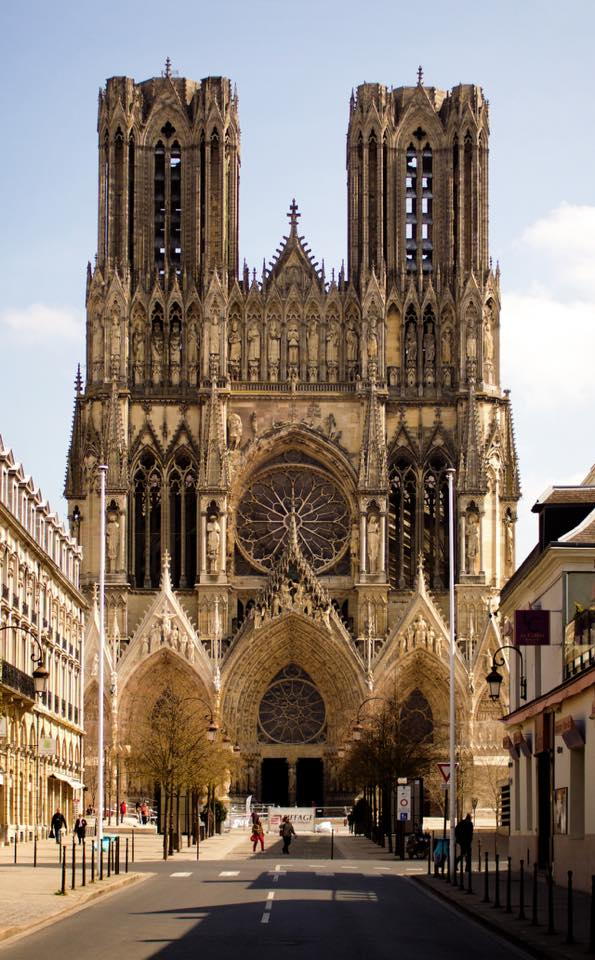
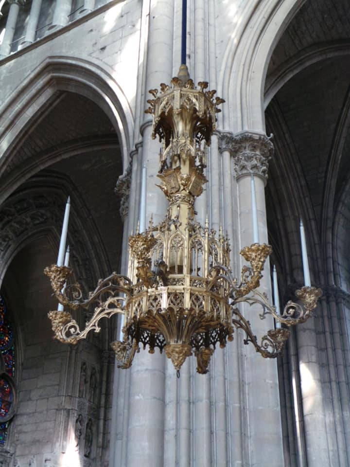
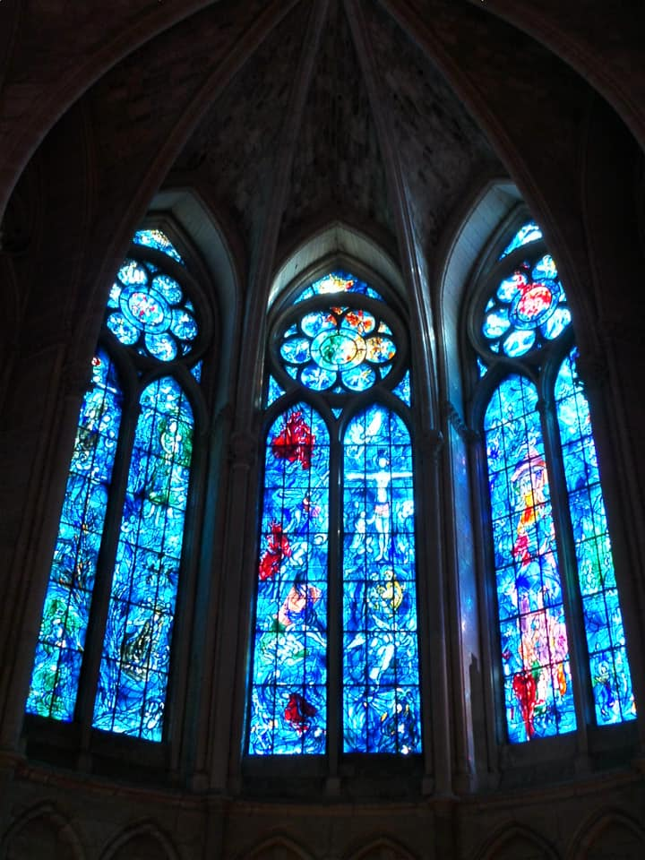
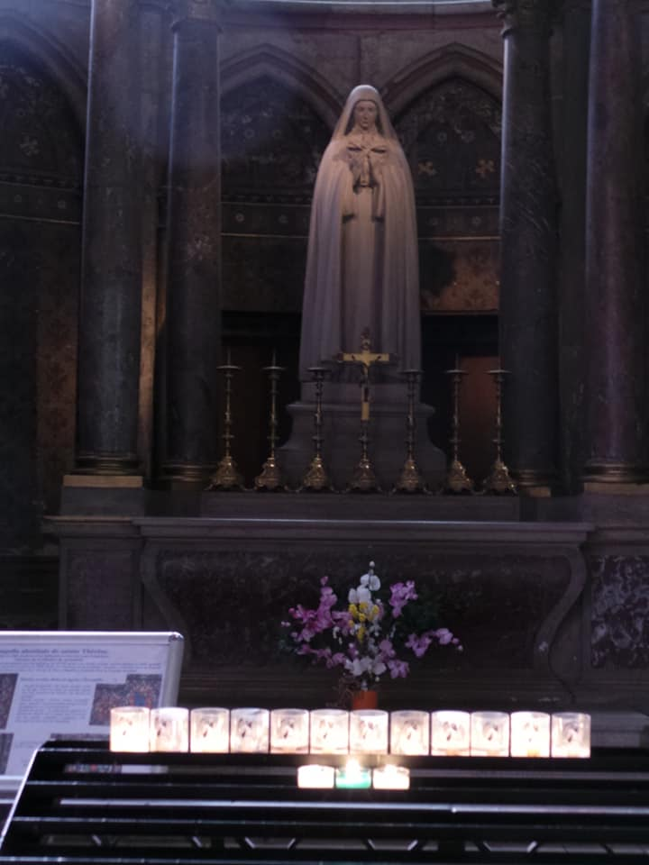
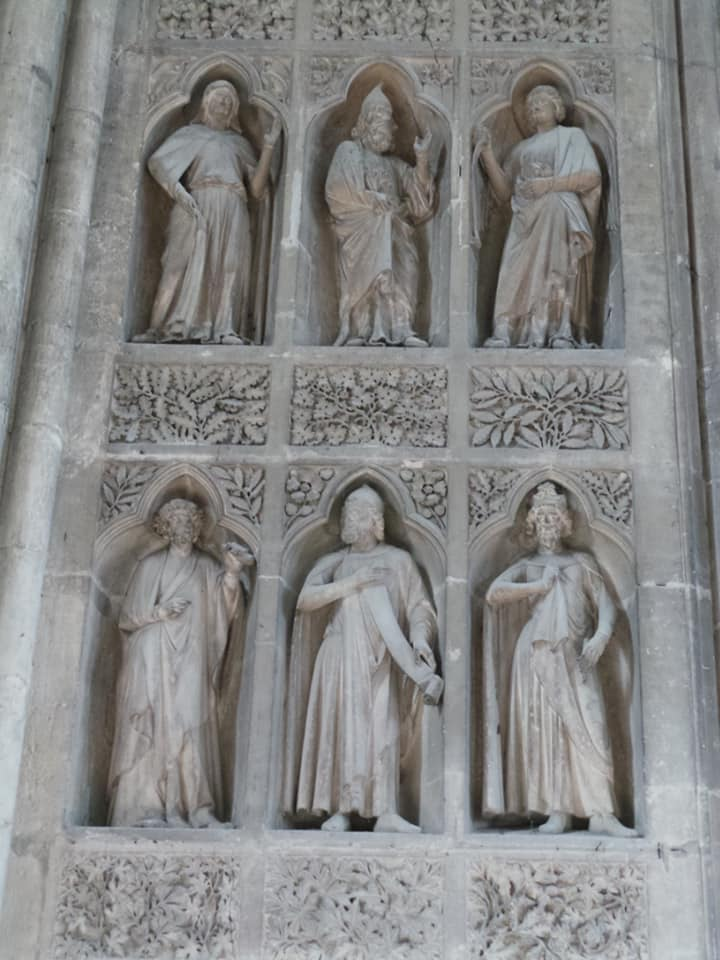
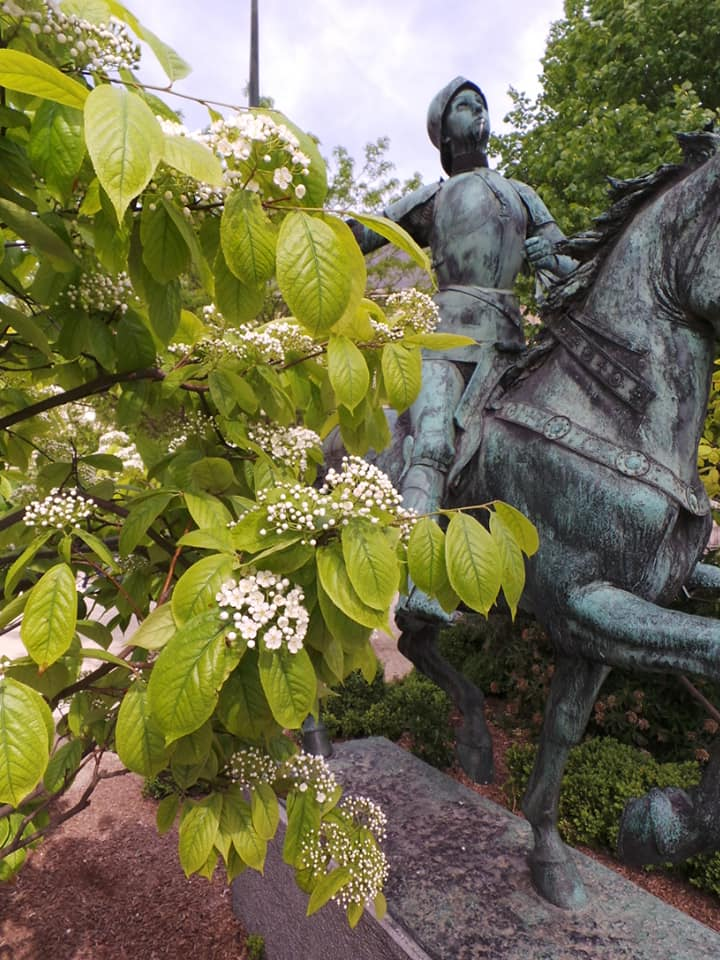

Reims Cathedral: the location where the kings of France were crowned. Built in the High Gothic style, the cathedral replaced an older church, destroyed by fire in 1211, that was built on the site of the basilica where Clovis I was baptised by Saint Remi, bishop of Reims, in 496. (I thought Clovis was a type of butter ...)
With superb stained glass windows by Marc Chagall (an artist I don’t usually admire very much) which are very fitting for the space.
Joan of Arc (despite being called the Maid of Orleans) is also identified with Reims as she helped bring about the coronation of Charles VII here in 1429.







